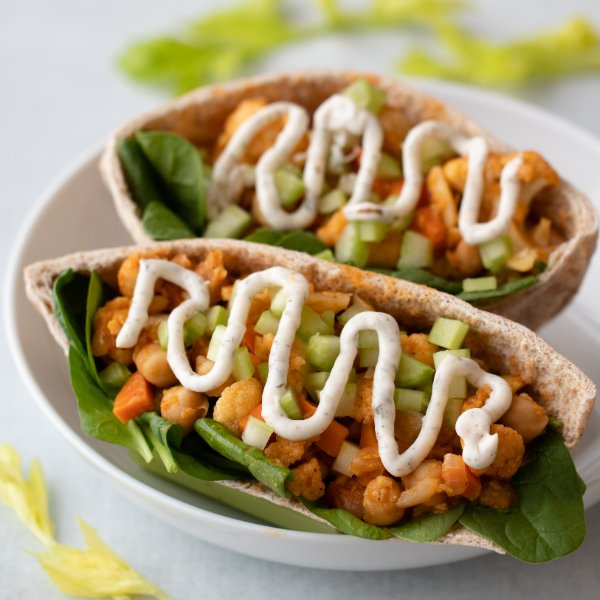

Buffalo Cauliflower & Chickpea Pita Pockets with Ranch Sauce

Nutrition (per serving)
655.8 kcalCalories
21 gProtein
83.1 gCarbs
30.1 gFat
Full nutrition table
| Calories | 655.8 kcal |
| Total fat | 30.1 g |
| Saturated fat | 4.5 g |
| Trans fat | 0.1 g |
| Cholesterol | 13.7 mg |
| Sodium | 717.3 mg |
| Carbohydrates | 83.1 g |
| Fiber | 19 g |
| Sugars | 9 g |
| Protein | 21 g |
| Potassium | 1202 mg |
| Calcium | 174.4 mg |
| Iron | 5.7 mg |
| Vitamin A | 354 IU |
| Vitamin C | 89.6 mg |
| Vitamin D | 2.8 IU |
Cookware
Ingredients
- 1 (5 oz) pkgbaby spinach
- 2 mediumcarrots
- 1 medium headcauliflower
- 2 stickscelery
- 2 (15 oz) cansgarbanzo beans (chickpeas)
- 2 clovesgarlic
- 2 tbsptomato paste
- 4whole grain pitas
- 1 mediumyellow onion
- black pepper
- chili-garlic sauce
- Dijon mustard
- dill, dried
- extra virgin olive oil
- garlic powder
- mayonnaise
- onion powder
- parsley flakes
- salt
- white wine vinegar
Steps
- Wash and dry the fresh produce. (Skip the spinach if it came pre-washed.)1 medium head cauliflower
2 medium carrots
2 sticks celery
1 (5 oz) pkg baby spinach - Reserve ½ cup of the chickpea liquid and place in a medium bowl, then drain and rinse the chickpeas.2 (15 oz) cans garbanzo beans (chickpeas)
- Add half the chickpeas to the bowl with the bean liquid and mash well; stir in remaining chickpeas, leaving them whole.
- Add vinegar, Dijon, chili-garlic sauce, and tomato paste to the chickpea mixture; stir to combine. Set aside.2 tbsp white wine vinegar
4 tsp Dijon mustard
2 tsp chili-garlic sauce
2 tbsp tomato paste - To make the ranch dressing, combine mayonnaise and spices in a small bowl; whisk to combine. Add additional water (1 tsp at a time) as needed to reach a drizzling consistency.⅓ cup mayonnaise
1 tsp dill
¼ tsp parsley flakes
¼ tsp garlic powder
¼ tsp onion powder
⅛ tsp salt
¼ tsp black pepper - Remove leaves and thick stems from cauliflower; cut into bite-sized florets. Transfer to a medium bowl.
- Peel and small dice onion and carrots; add to the bowl with the cauliflower.1 medium yellow onion
- Preheat a large skillet over medium-high heat.
- Peel and mince garlic.2 cloves garlic
- Once the skillet is hot, add oil and swirl to coat the bottom.2 tbsp extra virgin olive oil
- Add cauliflower, onion, carrot, and garlic to the skillet and cook, stirring occasionally, 4-5 minutes.
- Add chickpea mixture, salt, and pepper to the skillet and continue to cook until cauliflower is tender, about 5 minutes. Taste the chickpea mixture and add more garlic-chili sauce (½ tsp at a time) to reach desired spiciness.1 tsp salt
½ tsp black pepper
2 tsp chili-garlic sauce - Small dice celery.
- Cut pita in half and carefully open the pita pockets.4 whole grain pitas
- To serve, divide spinach, bean-cauliflower mixture, and celery between pita pockets. Top with ranch dressing and enjoy!